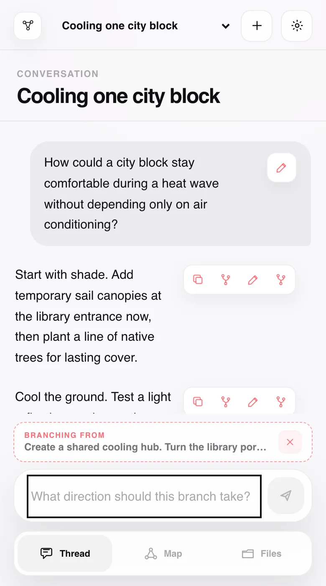
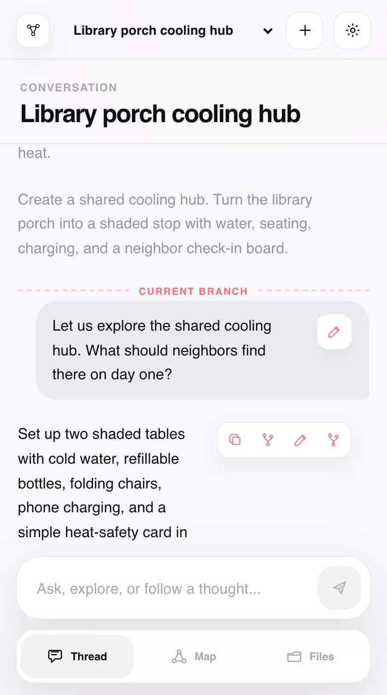
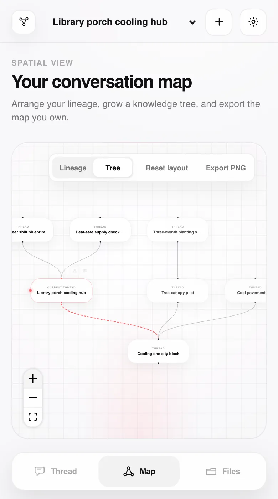
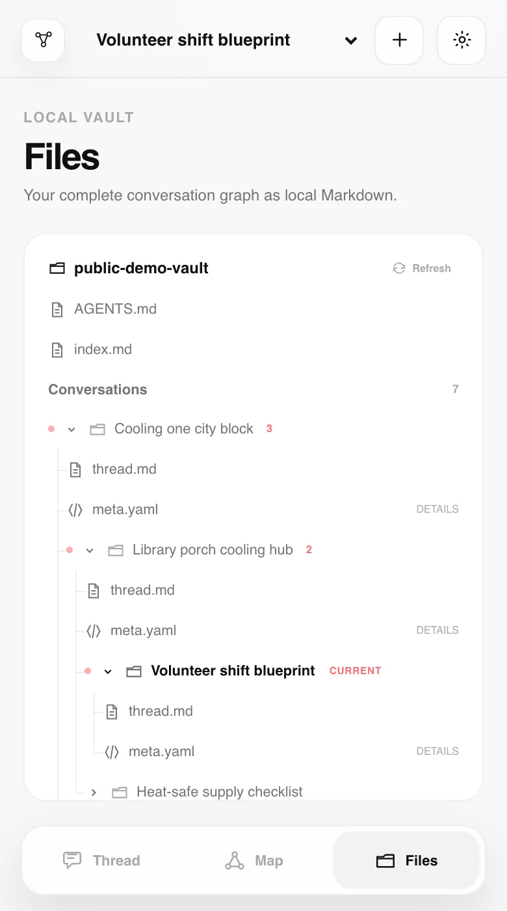

01 / Addressable blocks
Every response has places to branch.
Agent responses are organized into addressable Markdown blocks. Choose a whole block to begin the next request from that exact point.

Local-first agent conversation workspace
A browser interface on localhost for branching from exact response blocks and preserving every path as a durable plain-file Knowledge Tree.
A parent conversation has several content blocks. Its first block branches to child thread A. Its second block separately branches to child threads B and C. A block in child A branches again to a grandchild. Each child has exactly one parent, and no branches converge.
Agent responses are organized into addressable Markdown blocks. Choose a whole block to begin the next request from that exact point.

The child thread preserves root-to-fork context, then continues independently. Content from sibling branches stays out.

Trace every branch, return to a node, branch again, and open conversations directly from the Knowledge Tree.

Markdown stores conversations; YAML stores relationships. Local Git records each mutation, while AGENTS.md and a regenerated index keep the vault traversable.

Quickstart
Start after cloning or downloading the repository and preparing the host machine.
Git, Python 3.11+, Node.js 22+, a modern browser, and GitHub Copilot CLI with active access.
The Bash launcher supports macOS and Linux-style environments today.copilot login
Lineage App uses the installed CLI and the models available to your Copilot account.
./scripts/run-local.sh
The launcher installs project dependencies, builds, binds localhost, and opens the browser.
Data defaults to ~/web-context-graph-data/. Set WCG_VAULT_ROOT before launching to choose another directory.
FAQ
What works today, what stays local, and what is deliberately not implied.
A trusted, single-user, local-first browser workspace for branching GitHub Copilot CLI conversations at addressable response blocks and preserving the resulting lineage as a plain-file Knowledge Tree.
Neither. FastAPI serves the React UI on localhost; the host machine runs the backend and agent. The Bash launcher supports macOS and Linux-style environments. There is no supported native-Windows launcher or hosted multi-user service.
GitHub Copilot CLI only today, invoked directly as a subprocess. Lineage App is not provider-neutral, and model availability comes from your Copilot CLI account.
Git, Python 3.11+, Node.js 22+, GitHub Copilot CLI with active access and authentication, and a modern browser on a macOS or Linux-style environment.
No. After prerequisites, clone/download, and Copilot authentication are ready, it handles project dependencies, the production build, localhost startup, and opening the browser. It does not install system tools or provide Copilot access.
The default is ~/web-context-graph-data/. Set WCG_VAULT_ROOT before launching to use another directory.
Not automatically. Every mutation is committed to local Git. You can configure and push a remote manually; a private repository is recommended for sensitive conversations.
NotebookLM is excellent for source-grounded synthesis, while LLM wikis can compile documents into useful pages and links. Lineage App solves a different problem: keeping you in control while knowledge is explored.
Every branch is a deliberate choice; its parent and fork point remain visible, sibling contexts stay isolated, and the complete tree remains inspectable as local Markdown, YAML, and Git history. It does not make AI infallible - it makes the path from question to answer auditable, revisable, and yours. The tools can complement one another.
Yes. AGENTS.md documents discovery through the regenerated index, authoritative relationships in meta.yaml, conversation content in thread.md, and root-to-current reconstruction without sibling leakage.
No. Keep it on trusted localhost. Copilot runs with broad local tool access and --no-remote; the backend is not hardened for public or multi-user access.
No. Responses are addressable at the Markdown block level today. Arbitrary highlighted spans are future work.
The source is licensed under GNU AGPL-3.0-or-later. Copilot access, usage, subscription, and billing remain governed separately by GitHub.
The next node is yours
Clone, authenticate Copilot CLI, then launch on macOS or Linux with Git, Python 3.11+, Node.js 22+, and a modern browser ready.